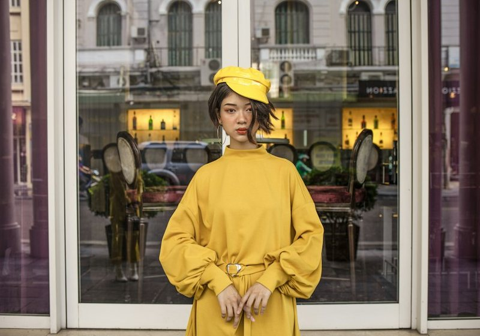
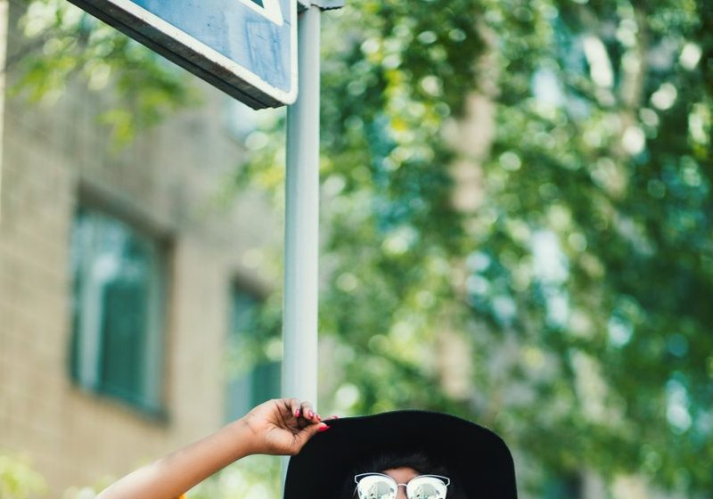
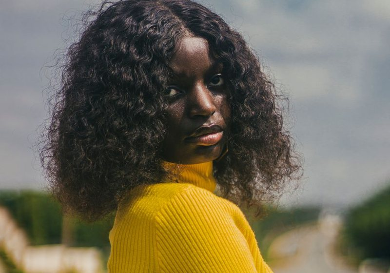
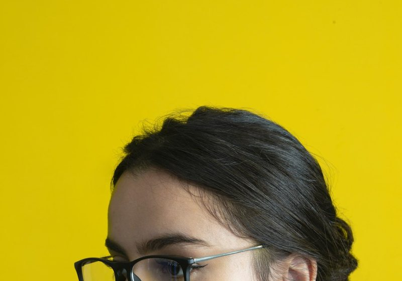
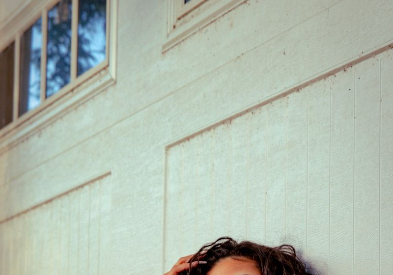
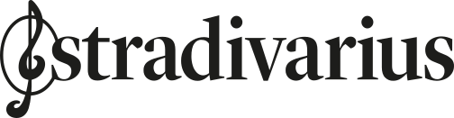

Meilleure marque de t-shirt femme : 15 basiques et 2 000 avis
Rétrécissement, déformation du col et tenue du blanc d'après les avis, du t-shirt à 5 € au t-shirt à 45 €.
Jeans, robes, manteaux, basiques. Nous comparons les grilles de tailles officielles, les compositions affichées, les prix catalogue et les avis clients, puis nous classons les marques sur les mêmes critères.

Zara, Mango, H&M, Kiabi, Stradivarius, Bershka, Primark, Shein. Prix relevés trois fois dans l'année, tailles mesurées sur 512 pièces, tenue après cinq lavages. Le podium n'est pas celui qu'on attend.




Rétrécissement, déformation du col et tenue du blanc d'après les avis, du t-shirt à 5 € au t-shirt à 45 €.
Grammage et composition affichés, du modèle à 40 € au modèle à 190 €.
Cinq tenues complètes par marque, prix catalogue et avis clients croisés.
Pourcentage de laine annoncé, bouloches signalées dans les avis et prix au gramme.
Tour de taille et longueur d'entrejambe annoncés, du 34 au 46, avis croisés.
Un 38 qui va du 36 au 40 selon la marque, le tableau complet des écarts.
Note globale sur 10 sur le seul univers femme. La qualité des matières et la fidélité des tailles pèsent autant que le prix.
Voir la méthode de notation



Comparez deux marques femme sur nos cinq critères en un clic.
Sur nos relevés 2026, Zara obtient la meilleure note globale (7,9/10) sur la qualité des matières, Kiabi la meilleure note sur le rapport qualité-prix (7,5/10). Le détail est dans notre comparatif de 18 marques.
Sur 18 marques mesurées, l'écart entre la taille annoncée et la taille réelle va de moins 3 cm à plus 3 cm sur un 38. Kiabi et H&M taillent le plus juste, Zara et Stradivarius taillent petit.
Kiabi sur les basiques et les jeans, Mango en soldes sur les manteaux et la maille. Shein est la moins chère mais la plus fragile au lavage.
Cinq critères sur 10 : prix, qualité, fidélité des tailles, livraison et note globale pondérée. Les données proviennent des sites officiels des marques et des avis clients vérifiés.
Sur 12 coupes essayées et mesurées, les jeans Kiabi et H&M gardent le mieux leur taille après lavage. Zara offre les coupes les plus mode mais rétrécit en longueur.
Un email par semaine : le classement du mois, les nouveaux comparatifs et les vraies baisses de prix relevées en magasin.
Pas de publicité, désinscription en un clic.